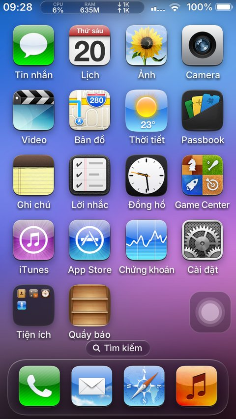
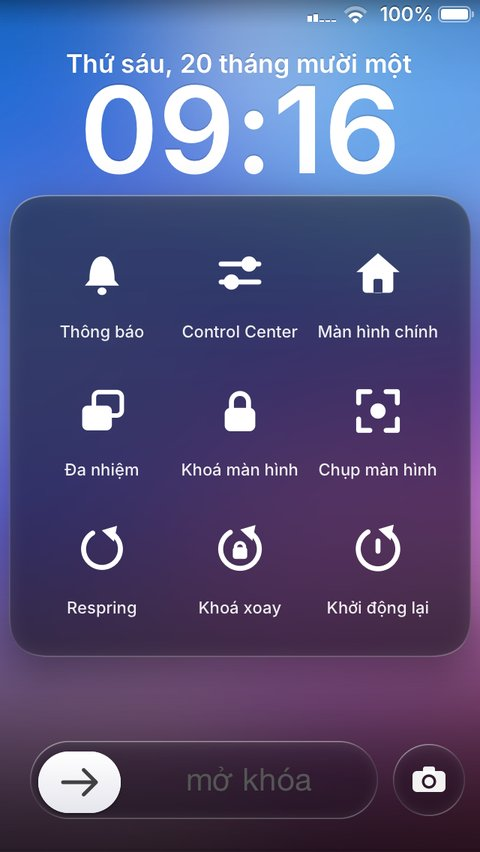
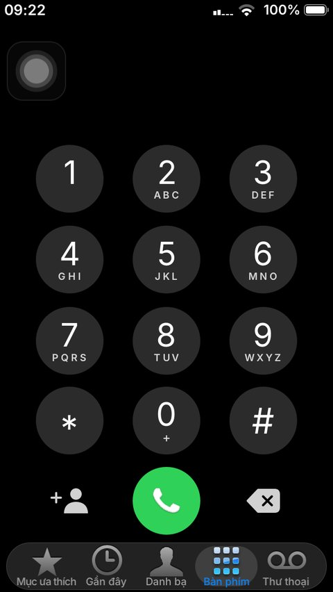
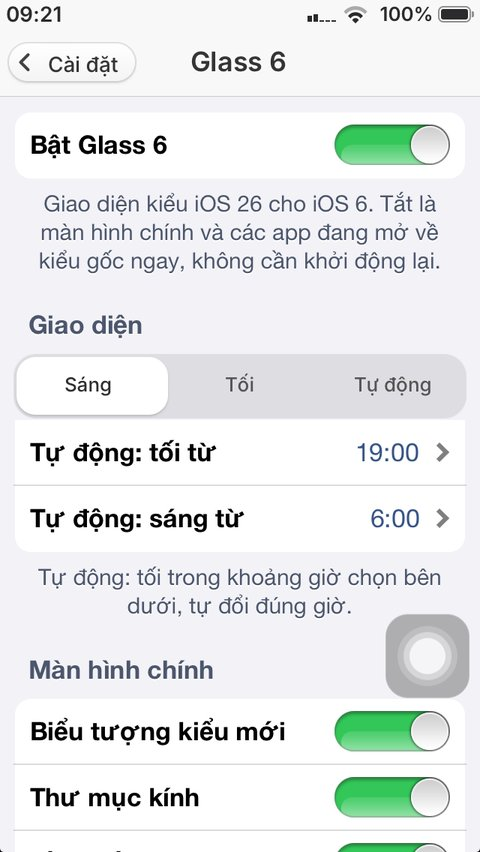
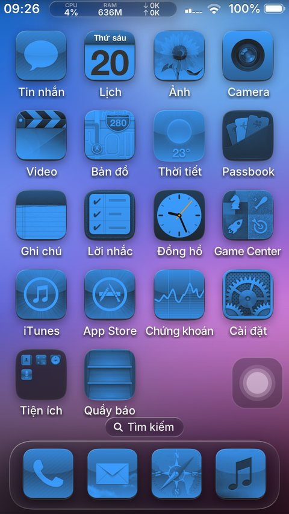

Glass 6
Giao diện Liquid Glass kiểu iOS 26 cho iPhone 5 và iPad mini 1 chạy iOS 6 đã jailbreak.
Bản 1.0.0Nguồn Cydia: https://itovn.github.io/Glass6/cydia/
Trên iPhone 5

Màn hình chính Màn khoá
Màn khoá Control Center
Control Center Thư mục kính
Thư mục kính
Nút AssistiveTouch Hộp thoại kính
Hộp thoại kính Cài đặt, chế độ tối
Cài đặt, chế độ tối
Điện thoại Máy tính
Máy tínhCó gì
Màn hình chínhDock kính, thư mục kính, ô tìm kiếm dạng viên; biểu tượng bốn kiểu (mặc định, tối, trong, nhuộm màu); kim của biểu tượng Đồng hồ chạy thật.
Màn khoáĐồng hồ lớn, rãnh trượt mở khoá bằng kính, thông báo dạng thẻ, dòng «Đã sạc N%» thay cho hình viên pin.
Control CenteriOS 6 chưa có — Glass 6 thêm vào: Máy bay, dữ liệu di động, Wi-Fi, Bluetooth, Không làm phiền, khoá xoay, sáng / tối, đèn pin, độ sáng, âm lượng, nhạc đang phát. Mở bằng cách kéo từ mép trên xuống ở phía bên phải.
Thông báo, hộp thoại, bảng chọnBăng thông báo dạng thẻ nổi, Trung tâm thông báo, hộp thoại, bảng chọn và bảng âm lượng đều là kính.
Khay đa nhiệmiPhone: các thẻ ảnh chụp app, vuốt lên để đóng. iPad: dải biểu tượng trên nền kính.
Trong appThanh điều hướng, thanh thẻ nổi, bảng, công tắc, thanh trượt, bàn phím — kiểu mới, theo sáng / tối. Vẽ lại riêng: Cài đặt, Đồng hồ, Ghi chú, Lời nhắc, Lịch, Danh bạ, Ảnh, Tin nhắn; trên iPhone thêm Điện thoại, Máy tính, La bàn, Ghi âm. App không phải của Apple giữ nguyên.
Sáng / tốiChế độ sáng, tối, hoặc tự đổi theo giờ — cả màn hình chính lẫn trong app.
Thanh trạng tháiPin vẽ lại (tia sét xanh khi sạc), giờ nằm bên trái, ẩn tên nhà mạng; dải hiệu suất nhỏ: CPU, RAM, mạng.
Nút AssistiveTouch riêngNút nổi và bảng chín ô bằng kính, tự chọn chức năng cho từng ô: màn hình chính, đa nhiệm, Control Center, khoá máy, chụp màn hình, âm lượng, respring…
Dịch vụ hệ thốngTắt các dịch vụ nền của iOS 6 đã ngừng hoạt động từ lâu, chặn cập nhật iOS — từng mục có công tắc, bật lại được.
Tự cập nhậtTự báo bản mới, tải và cài ngay trong Cài đặt › Glass 6. Gói chỉ được cài khi chữ ký số đúng.
Mọi thành phần đều có công tắc riêng trong Cài đặt › Glass 6. Giao diện tiếng Việt và tiếng Anh.
Sáng / tối, kiểu biểu tượng

Chế độ sáng Điện thoại, sáng
Điện thoại, sáng Ghi âm
Ghi âm
Biểu tượng nhuộm màuẢnh chụp trên iPhone 5 (iOS 6.1.4). iPad mini 1 có cùng các thành phần, bố cục theo kiểu iPadOS 26.
Cài đặt
1. Thêm nguồn CydiaMở Cydia → Nguồn → Sửa → Thêm, nhập
https://itovn.github.io/Glass6/cydia/ (hoặc chạm nút «Thêm nguồn vào Cydia» ở trên).2. Cài Glass 6Tìm «Glass 6» → Cài đặt → Xác nhận, xong bấm «Restart SpringBoard».
3. Tuỳ chỉnhMở Cài đặt › Glass 6: chọn sáng / tối, kiểu biểu tượng, bật tắt từng thành phần.
Lần đầu thêm nguồn, Cydia có thể báo «NO_PUBKEY» ở màn làm mới — bình thường: máy chưa có khoá của nguồn, khoá nằm trong gói Glass 6; cài xong là hết báo. Các bản sau tự cập nhật: Cài đặt › Glass 6 › Kiểm bản mới.
Máy chạy được
iPhone 5 và iPad mini 1, iOS 6.0 – 6.1.x đã jailbreak (cần MobileSubstrate và PreferenceLoader). Đã thử trên iPhone 5 (iOS 6.1.4) và iPad mini 1 (iOS 6.1.3). Trên mẫu máy khác Glass 6 không thay đổi gì; các mẫu khác sẽ được bổ sung dần.
An toàn
Glass 6 không sửa tệp nào của hệ thống — gỡ gói là sạch. Nếu màn hình chính khởi động 3 lần liền mà Glass 6 chưa chạy ổn, Glass 6 tự tắt. Tắt tay qua SSH:
touch /var/mobile/Library/Glass6/off rồi khởi động lại SpringBoard.Mã nguồn
Mã nguồn mở — GPL-3.0github.com/itovn/Glass6 · lõi Rust (dựng vật liệu kính), vỏ Objective-C nạp bằng MobileSubstrate.
Glass 6 là dự án độc lập, không liên quan tới Apple. «Liquid Glass», iOS, iPadOS là nhãn hiệu của Apple Inc.
Báo lỗi, góp ý: github.com/itovn/Glass6/issues
Báo lỗi, góp ý: github.com/itovn/Glass6/issues